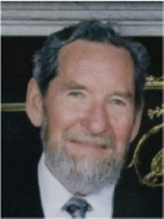
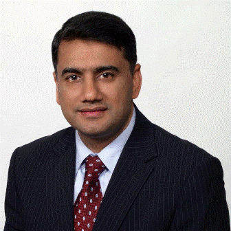

-
Call
+92 (51) 228 8416
-
-
Email
-
-
Call
+92 (51) 228 8416


Formally educated in Ireland, England, and the US with majors in Business, Education, Political Philosophy, English Literature, and Public Health, Dr. Shaw acquired a doctorate in Public Health from The University of California at Berkeley. For over thirty seven years he has worked in India, Pakistan, Ireland, Philippines, Germany, England, Swaziland, Papua New Guinea, Indonesia, The Gambia, The Sudan, Somalia, Solomon Islands, etc. He has been developing management systems, designing and managing projects in developing countries, making long and short-term plans, setting organizational goals and objectives, developing organizational rules, procedures and personnel policies, welding diverse staff members into high performance teams, designing and conducting epidemiological survey research, teaching at Universities, interfacing between governments of developing nations and development organizations. Currently he is heading Developing Indigenous Resources, a non-profit corporation, incorporated in California, USA.He has been Member of the President’s Task Force for Human Development Pakistan, Member of the faculties of Health Science, and of Management at The Centre for Higher Education, and Diablo Valley College, (both in California) as well as the University of Phoenix, director of Pharmaceutical Development for a new US company, Neurobiological Technologies Incorporated; Associate Director for Project Concern International in Asia, The Pacific, and Africa. Awards: Citizen of The Year Award - UN Association of San Francisco, California (2010); US Purpose Prize Fellow - for Slum project in Punjab, India (2009); for humanitarian work (2008); Contribution to Education from UT Chandigarh, India (2007); Appreciation from the Pakistani Government for relief work after the October earthquake (2005); Excellence from the American College of Physicians for designing APPNA SEHAT program in Pakistan (2002); from the City of Bacolod, The Philippines, for reducing malnutrition in children (1975).

Dr. Ashraf has in depth understanding of issues of the developing world and has been passionately contributing towards resolving them. He conceived the idea of improving human development as the key factor in Pakistan’s development, convinced the then government and established President’s Task Force on Human Development in 2001 and served as the Team Leader. Afterwards he served as the Chairman of the National Commission for Human Development (NCHD) Pakistan and a Minister of State. He was also appointed as Chairman Pakistan Cricket Board by the President of Pakistan in October 2006 and was elected to the Chairmanship of the Asian Cricket Council in 2008. He has been Member of APPNA Advisory Task Force to Ministry of Health, Government of Pakistan (1982), Co-Chair Human Development Foundation of North America (1999), Chairman, APPNA-SEHAT, (1989–99); President, Douglas County Medical Society (1992); President, Association of Pakistani Physicians of North America (1987–88); Director, International Association of American Physicians (1988); Member of Board, PAK-PAK (1990–Present); Member of Board, Islamic Center, Eugene, Oregon (1982–87); Member of Board, Muslim Education Trust, Portland, Oregon. He was conferred Sitara-i-Imtiaz by President of Pakistan in 2006 for 30 years of distinguished public service; awarded UNESCO INTERNATIONAL AWARD for Literacy in 2006; earned a Gold Medal for the Most Outstanding Graduate of Khyber Medical College 1956–2004 on occasion of KMC’s Golden Jubilee; awarded Lifetime Achievement Award by Khyber Medical College Alumni Association of North America (2004); Star Man of the Year Award by South Asia Publications (2003); Recipient of American College of Physicians Linda Rosenthal Award (2002); Special Award from Fairfax County (2000), Virginia, USA for promoting Asian American Harmony.

Professor Blackwood earned his membership from Royal College of Physicians (MRCP), PhD from University of Edinburgh and membership from Royal College of Psychiatrists (MRCPsych) and is elected Fellow of Royal College of Psychiatrists, Royal College of Physicians and the Royal Society of Edinburgh. He has been Member of Scientific (Clinical) Staff, MRC Brain Metabolism Unit, University of Edinburgh; Registrar in Psychiatry, Maudsley Hospital and Institute of Psychiatry, London; Member of Scientific Staff, MRC Brain Metabolism Unit, Edinburgh and Senior Lecturer and Reader Psychiatry, University of Edinburgh. Currently he is Professor in Psychiatry, University of Edinburgh. Currently he is leading the Edinburgh psychiatric genetics group which has established a Tissue Bank of DNA samples and diagnostic information from over 7,000 patients, and their relatives, with major mental illnesses. One of the main strategies followed by the group has been to map genes disrupted at translocation breakpoints in patients with schizophrenia or bipolar disorder. This has highlighted a possible role for the genes DISC1, PDE4, GRIK4, NPAS3 and ABCA13 contributing to risk of major psychiatric disorders. The team is using whole-genome and exome sequencing technologies to identify causative genetic variants in large extended families multiply affected with schizophrenia or bipolar disorder.

Jane Fisher is Jean Hailes Professor of Women’s Mental Health in the School of Public Health and Preventive Medicine at Monash University and a Professorial Fellow at the University of Melbourne. She has longstanding interests in the links between reproductive health and mental health from adolescence to mid-life in particular related to fertility, conception, pregnancy, birth and the postpartum period. She is Honorary Clinical Psychologist at Melbourne IVF and Chairs the Psychosocial and Epidemiological Research in Reproduction Committee at the Royal Women’s Hospital in Melbourne.

Tariq H. Cheema, a renowned social innovator and philanthropist, has devoted his life to making world a peaceful, equitable, and sustainable place for all. He is the founder of the World Congress of Muslim Philanthropists, a global network of affluent individuals, foundations and socially conscious corporations dedicated to advance efficient and accountable giving. He received his M.D. from the University of Istanbul, and earned a Certificate of Advanced Study in Philanthropy at Loyola University Chicago. He is one of the Rockefeller Foundation's prestigious Next Generation Leadership Fellows. His professional experience lies in the areas of strategic philanthropy, corporate giving, nonprofit governance and crisis management. Dr. Cheema ranks among the 500 most influential Muslims impacting the world today.

Peter Hill is a Public Health Physician and academic in International and Indigenous health. His key research interests are in international health policy and its translation into health systems and programs. His doctoral studies examined the evolution and application of international health policy during the early health sector reforms in Cambodia, focussing in particular on the Health Coverage Plan, the evolution of the Sector-Wide Approach for health development and the implications of international policy on the implementation of reproductive health programs. He has extensive international experience – in Nigeria, Cambodia, Lao PDR and Thailand, Mongolia, Papua New Guinea and Fiji – and has consulted for AusAID, the Australian Red Cross, the German Agency for Technical Cooperation (GTZ) and WHO. He has long standing collaborations with the National Institute for Public Health in Cambodia, the Institute of Tropical Medicine in Antwerp, and Health Development and Systems and the Department of Reproductive Health and Research, WHO, Geneva.

A result-oriented senior management and business development executive with 35 years of experience in the design, implementation, and technical support of international health programs in about 50 countries; strategic thinker, innovative program designer, creative problem solver, skillful negotiator and excellent communicator; highly successful in new business development with USAID, CDC, Global Fund, multi-national banks and foundations; proven ability to mobilize, motivate and manage multi-disciplinary technical teams for business development and client-focused project management; expert consensus and team builder; outstanding leadership, diplomatic, and organizational skills; proven ability in crisis management; prudent judgment and cultural adoptability; expert in creating and capitalizing on networks, management of people, stakeholders and relationships with the donors and partners, and capacity building.